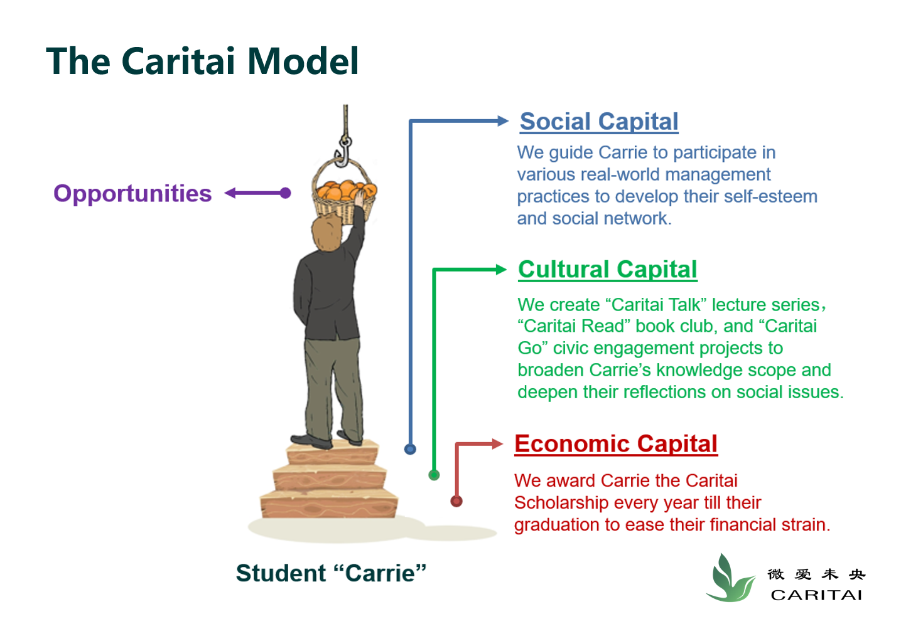

About Us
Who is Caritai?

Who is Caritai?
The name Caritai is inspired by two words: Caritas (Latin for "a love for humankind") and ài (爱), the Chinese word for "love." The concepts woven into the name Caritai echo the Chinese name of our organization, 微爱未央, which translates to "unending small love" from Classical Chinese. We are wholeheartedly committed to supporting low-income college students by building a community of trust, care, and growth.
We endeavor to create personal and professional development opportunities to empower our students to make a positive social impact.
Caritai members share a passion for promoting social justice through education and believe that everyone has a unique capacity to make a difference. Our shared convictions led us to develop the Caritai Leadership Program, through which we provide scholarships and personalized coaching for under-served students, following a systematic mentorship curriculum. By providing both financial and developmental support, we are committed not only to creating an enriched college experience for our students, but also to cultivating their leadership and professional skills, sense of self-reliance, and spirit of community service. So far, we have mentored 20 students and provided 37 scholarships, and our feedback has been overwhelmingly positive from both the students and administrators of our partnered university.
What problems does Caritai address?
Financial difficulty
Can I afford college expenses?
Social skill
Can I be socially comfortable and adaptive?
Networking challenge
Do I have meaningful and helpful connections?
What values does Caritai uphold？
Our core principles
Sincerity, gratitude, learning, service.
Our mission
To promote social justice via educational equality.
Our vision
Your home is where Caritans are.
How does Caritai carry out its mission?
We have designed and implemented a leadership development program for students to systematically acquire the resources they need, foster professional skills, and explore future directions.
Know MoreMilestones of Caritai
Click Buttons